How to use this guide. Each chapter explains one part of the app in plain English, in the order you meet it: first the main tabs, then the player, then downloads, then Settings. Menu paths look like this: Settings → Appearance → Layout.
Screens and wording may change slightly as the app grows; the in-app changelog (Settings → About → Changelog) always lists what is new in the version you have installed.
1 Welcome to YouGlideTube
YouGlideTube is a fast, buttery-smooth YouTube client for Android, built for instant playback, background play, downloads and a clean, distraction-free interface — on your phone and on your Android TV.
The phone screens shown in this guide are illustrations drawn from the app's design, not photographs of a device — the real screens may look slightly different.
It is a fork of Flow 3.0.0, rebranded and extended end to end. You sign in with your own Google account, and the app then behaves like YouTube itself: your home feed, subscriptions and watch history come straight from your account, and anything you watch in YouGlideTube also appears in your YouTube history on every other device.
What makes it different
Buttery-smooth playback. Videos start buffered before you press play, and quality steps up smoothly as your network allows. On slow networks the app keeps a bigger buffer and steps up more slowly, so mid-video stalls are rarer.
Feed previews. Videos preview as you scroll. Tapping a preview continues from the preview position, with an unmute button on the preview itself.
Shorts that scroll without loading pauses. Shorts pre-buffer ahead while you scroll.
Real downloads. Full videos, audio in several languages at once, or just a clip between two timestamps you pick.
Private when you want it. Deep Glide Mode pauses history and scrobbling — including the signals YouTube's servers receive (see Chapter 17).
Your music, your way. A full music player with lyrics, translations, a parametric equalizer and scrobbling to Last.fm, Libre.fm and ListenBrainz.
Requirements
Android 8.0 (API 26) or newer, phone or Android TV.
An internet connection. Most features work without signing in, but your personal feed, subscriptions, history and likes need a Google account.
One universal APK — the same file installs on every device.
2 Getting started
Installing
Download the latest APK from the latest release — this link always opens the newest version.
Open the file on your phone and allow installation from that source when Android asks.
Open YouGlideTube. It installs over any earlier version without losing your data.
First run
The first-run screens walk you through the basics. The most important step is Sign in with Google: sign in and YouGlideTube works like YouTube — your home feed, subscriptions and history come straight from your account. You can skip this and sign in later from Settings; without signing in you can still search and watch, but your personal feed, subscriptions and history stay empty.
Multiple accounts. You can sign in with more than one Google account and switch between them. Each account keeps its own feed, subscriptions and history.
The main tabs
Along the bottom of the screen are the main tabs. Tapping a tab you are already on refreshes it — this works on every tab: Home, Music, Subscriptions, Library, Search, Explore and Shorts.
Tab
What it is
Home
Your personal feed from YouTube, with video previews as you scroll.
Music
Music home, mixes and your music collections.
Subscriptions
The latest videos and Shorts from channels you follow.
Library
Your playlists, Liked videos and music, Watch Later, history and downloads.
Search
Search everything, with filters and recent searches.
Shorts
Full-screen vertical videos, one swipe at a time.
If the bottom tabs ever disappear on their own, tap anywhere in the app and they come back.
3 Home feed
The Home tab shows your personal feed, served by YouTube for your signed-in account. Pull down to refresh. Tapping the Home tab again also refreshes it.
Video previews. As you scroll, videos preview silently. Tap a preview and playback continues from the preview position; tap the unmute button on a preview to hear it.
Video cards. Cards are spaced with proper gaps, and each card picks its accent colours from its own thumbnail.
Open a channel. You can visit a channel from any feed card or from the player.
Not interested / block. You can mark a video "Not interested" or block a channel; hidden items stay hidden for the session.
Same feed for hours? That is normal: YouTube serves the same home feed for hours at a time. It is not a bug — a refresh returns the same videos until YouTube itself changes the feed.
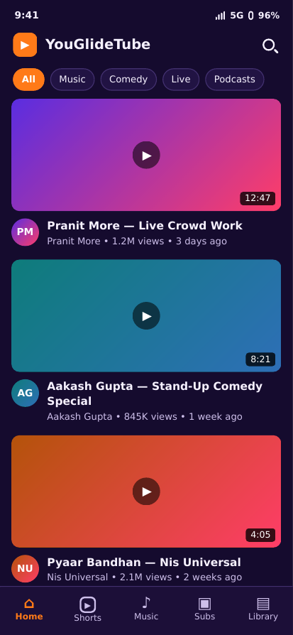
Home feed.
Animated backgrounds. The home background can show one of 30 animated festival looks (Diwali diyas and 29 more). They are off by default. Turn them on in Settings → Appearance → Layout.
Battery saver
If the app ever feels heavy, Settings → Battery saver switches off animations, glass blur, feed previews and Shorts pre-loading for a lighter, faster app.
4 Search
Search finds videos, Shorts, channels, playlists, movies and music across YouTube.
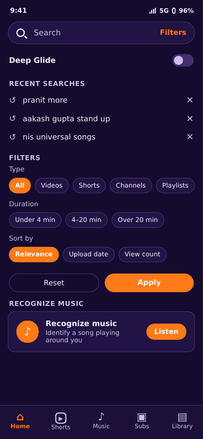
Search, with recent searches and filters.
Filters
After searching, open Filters to narrow results by:
Type — All, Videos, Shorts, Channels, Playlists, Movies and more.
Duration — under 4 minutes, 4–20 minutes, or over 20 minutes.
Upload date — last hour, today, this week, this month or this year.
Features — for example videos with subtitles/CC, in 4K, or live.
Sort by — relevance, upload date, view count or rating.
Watched — show only videos you have or have not watched.
Use Apply to run the filtered search, or Reset to clear all filters.
Recent searches
Your recent searches appear under the search box and survive restarts. You can clear them from Settings → Search & History.
Deep Glide switch on search
If you turn on Show on search in the Deep Glide settings, a Deep Glide switch appears above your recent searches, so you can switch private mode on or off without opening Settings. See Chapter 17.
Recognize music
Recognize music listens to a song playing around you and identifies it (Shazam-powered), with a recognition history you can search later.
5 Subscriptions
The Subscriptions tab shows the latest videos and Shorts from the channels you follow, newest first. Tapping the tab again refreshes it.
Subscribe / unsubscribe from any channel page, or from a video's channel row. Subscriptions live on your Google account, so they match youtube.com.
Subscription groups. You can sort channels into folders (groups) and label avatars with their group, so a busy subscriptions list stays organised.
Guest mode. If you are signed out, tapping like, dislike or subscribe shows a sign-in prompt instead of silently doing nothing.
6 Library
The Library tab is your collection. Pull down to refresh it, or tap the tab again.
Playlists
All of your playlists load from your account — created, saved and liked playlists alike.
Open a playlist to see its videos, sort them, and play them in order or shuffled.
Create, rename, edit and delete playlists. Deleting a playlist sticks — it does not come back after you leave the screen.
Save someone else's playlist to your library, and remove it again later. Saving works on playlists that are not yours, not just your own.
Add to playlist from any video: pick a playlist, or create a new one on the spot.
Watch Later is a playlist like any other: add a video to it and it is saved on the server, so it is there on every device.
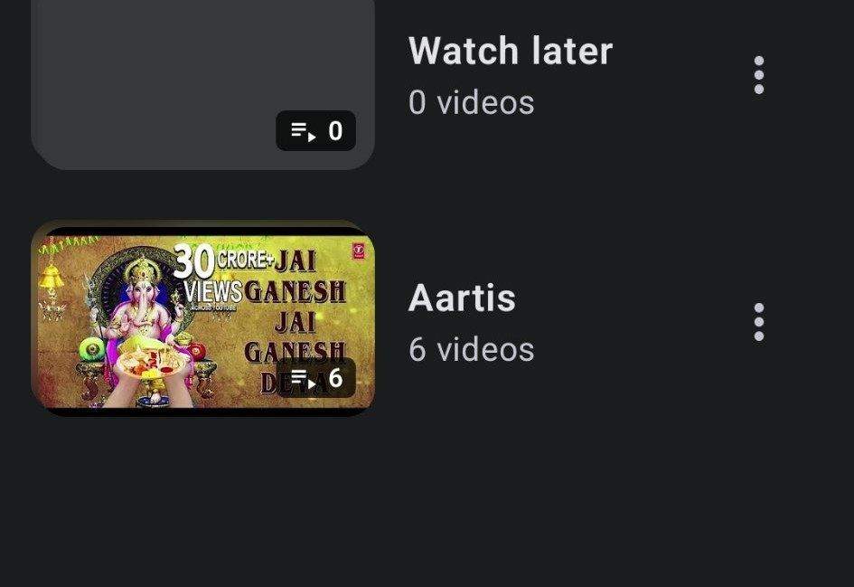
Your playlists in the Library.
Liked videos & Liked music
Liked videos lists every video you have liked. The page cover shows the picture of the top video, and follows your sorting — sort the list and the cover follows the video on top.
Liked music lists the songs you hearted in the music player. Its cover works the same way: it follows the top song after any sort.
If a saved picture is broken, the cover and the rows fall back to the video's own thumbnail instead of staying blank.
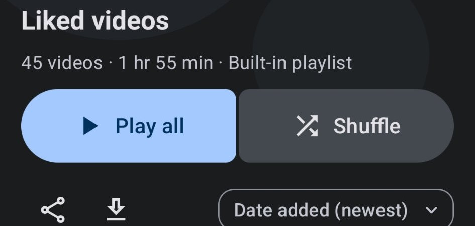
Liked videos — Play all, Shuffle, and sort by date added.
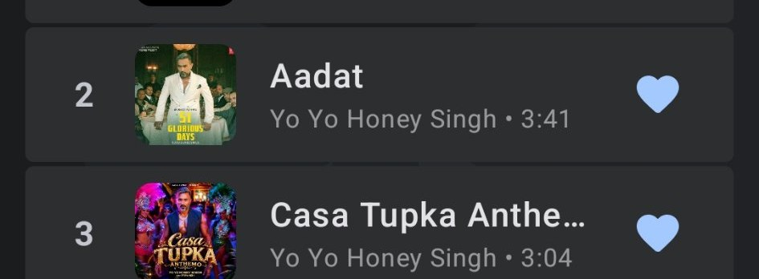
Liked music — songs you hearted in the music player.
History
Your watch history comes from your YouTube account server, like the official app — so it matches everywhere. See Chapter 14 for the full story, including Clear All and deleting single entries.
Downloads
Everything you have downloaded, in one place. See Chapter 10.
Local media & notes
Local media. Play videos and music stored on this device, alongside your online library.
Notes. Keep private notes on channels and videos, visible only to you in the app.
7 Video player
Tap any video to play it. The player is designed for buttery-smooth playback even on slow 4G: videos start buffered before you press play, and quality climbs step by step instead of jumping.
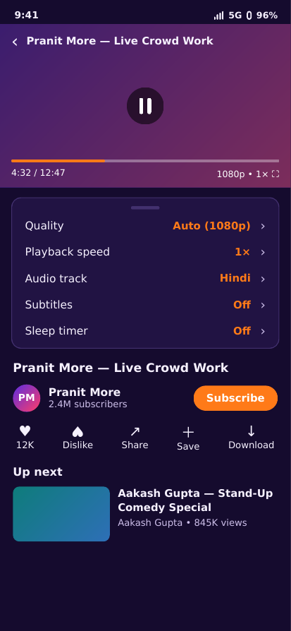
The video player.
Playback controls
Quality. The default is Auto: the app climbs to the best quality your network can handle instead of staying pinned to 480p on mobile data. You can also pick a fixed resolution (including HDR where the video offers it), separately for Wi-Fi and mobile data.
Playback speed. From 0.25× to 2×, with presets you can edit in Settings.
Repeat & shuffle. Repeat one video, repeat the queue, or shuffle it.
Queue. Up next is a real queue: add videos to it, reorder it, and remove items. Autoplay follows YouTube's own related list — a song leads to songs like it, a trailer to trailers like it.
Audio tracks. Videos with more than one audio language (for example Hindi and English) let you switch language while playing.
Subtitles / CC. Turn subtitles on and pick a language where the video offers them.
Transcript. Follow along with the video's transcript while it plays.
Sleep timer. Stop playback automatically after a time you pick — the button sits next to the queue button (turn it on in Player Appearance settings if it is hidden).
Seek zones. Double-tap the left or right side to seek back or forward; the seek distance is adjustable.
Save, like, subscribe
Save adds the video to a playlist or Watch Later. The button flips to Saved the instant the save lands.
Like / dislike work on your account. Signed out, they show a sign-in prompt instead of changing the count.
Share sends just the video link, or the link with a message — your choice.
Background play & picture-in-picture
Background Play. Leave the app and the video keeps playing as audio, with controls in the notification and on the lock screen.
Picture-in-Picture (PiP). A floating video window over other apps. Auto PiP switches to picture-in-picture by itself when you leave the app mid-video.
Both can be set separately for videos and for Shorts.
SponsorBlock, DeArrow & RYD
SponsorBlock skips sponsored segments and other marked parts of a video automatically, per category (sponsors, intros, outros, interaction reminders and more). You can turn categories on or off, and choose per video whether segments are skipped, shown with a button, or left alone. DeArrow replaces clickbait titles and thumbnails with community-chosen ones, and RYD (Return YouTube Dislike) shows the community dislike count.
Tip. If a video ever buffers in the middle, check the Diagnostics report in Settings — it records buffer and stall lines that show exactly where playback struggled.
8 Music player & lyrics
Music plays in its own player, built for listening: background play, queue, and lyrics that follow the song.
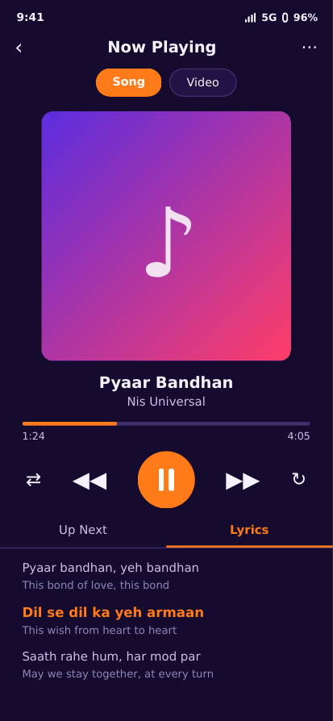
The music player with lyrics.
Music home & mixes. The Music tab has your mixes, new releases and music collections.
Queue. The full up-next queue, with shuffle and repeat.
Lyrics. Synced lyrics with a full-screen view. Tap any line to play from that line.
Translation & romanization. Show the translated line under each lyric, and show lyrics written in other scripts in Latin letters too.
Lyrics providers. If lyrics are missing, you can switch lyrics provider in Playback settings.
Parametric equalizer. A full equalizer with frequency, gain and Q controls per band, plus presets (including Vocal and podcast).
Heart songs. Hearting a song in the music player adds it to your Liked music collection in the Library.
9 Shorts
Shorts play full-screen, one swipe at a time — up for the next, down for the previous. They pre-buffer ahead while you scroll, so scrolling has no visible loading pauses.
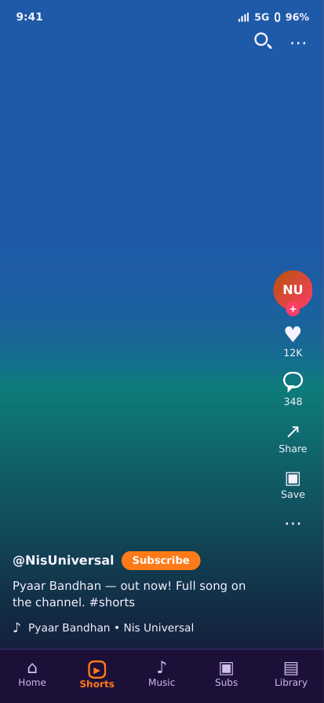
Shorts.
Like, dislike, comment and share work exactly like the video player; signed out, they ask you to sign in.
Shorts have their own background-play and picture-in-picture settings.
Comments on a Short use the same sorting (Newest / Oldest) as everywhere else.
10 Downloads & clips
Download videos to watch offline. Downloads live in Library → Downloads, and in Download/YouGlideTube and Music/YouGlideTube on your device storage.
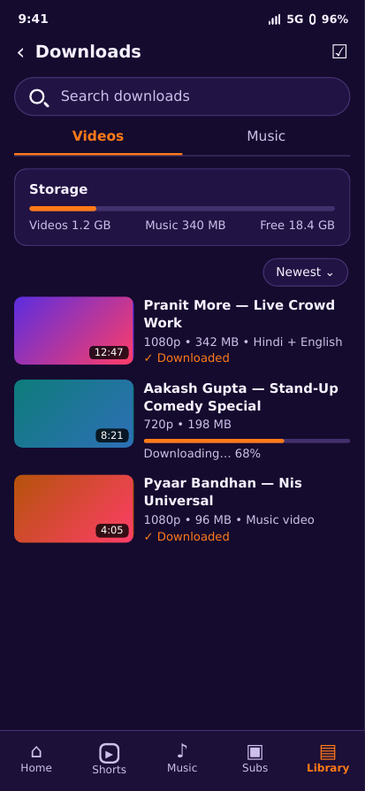
Downloads.
Downloading a video
Tap Download on a video.
Pick a quality — Best, or a specific resolution and codec. HDR is offered where the video has it. The approximate file size is shown next to each quality.
Tick the audio languages to keep. A download can carry more than one audio track — for example Hindi and English in the same file — and you switch language while playing it back.
Downloads keep working in the background, with progress in the notification.
Download a clip
You do not have to download a whole video. Download a clip saves just the part between a start and an end time you pick:
Enter a start time and an end time inside the video length.
The clip starts at the nearest keyframe just before your start time, so the cut is clean.
Only the clip's own segments are fetched — for MP4 and WebM (VP9/AV1) alike — so clip downloads are much faster than downloading the whole video.
Download settings
Settings → Download Settings controls performance, storage location and how many download threads run at once. If downloads from an earlier install are missing from the list, the app can find them again in your Download/YouGlideTube and Music/YouGlideTube folders.
11 Channel pages
Every channel has its own page, reachable from a feed card, a search result, the player, or a video's channel row. Tabs on a channel page:
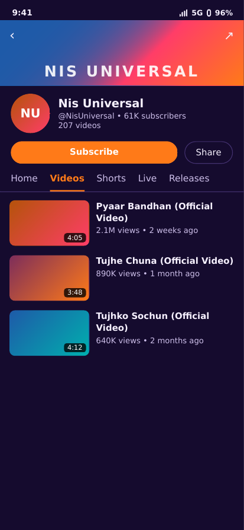
A channel page.
Tab
What you find there
Home
The channel's featured videos and shelves.
Videos
Every upload, newest first.
Shorts
The channel's Shorts.
Live
Live streams and upcoming streams.
Releases
Music releases — albums and singles, each as a playlist with its cover art.
Playlists
The channel's public playlists.
Posts
Community posts: text, photos, polls and shared videos.
About
Description, links and channel details.
Subscribe from the channel page to follow it; the button shows the state on your account. You can also search inside a channel from its search box.
12 Community posts & comments
Community posts
Channels post text, photos, polls and shared videos on their Posts tab. You can:
Like a post, and vote in its polls.
Tap a photo to see it full-screen; swipe through galleries.
Save a post photo to your Gallery. Open the photo full-screen and tap the download button next to "Tap to close" — the picture saves to Pictures/YouGlideTube, in full quality.
Share a post, and open the attached video from a shared-video post.
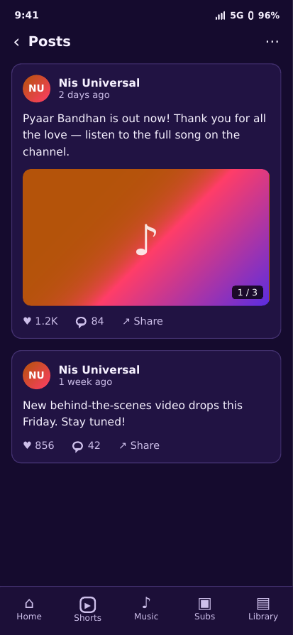
A community post.
Comments
Comments work everywhere — on videos, Shorts and channel posts — and they are real: what you post reaches YouTube's servers and stays there.
Post a comment, reply inside a thread, edit your own comment, delete it, and like comments — including replies inside threads.
Sort comments by Newest or Oldest. Oldest shows comments oldest-to-newest across the whole app — player, Shorts and channel posts.
Only your own comments can be edited or deleted.
Signed out, commenting shows a sign-in prompt.
13 Live streams & live chat
Live streams play in the same player as normal videos, loaded through your signed-in session. You can watch, chat, and replay a live stream's chat afterwards where YouTube provides it.
Live chat. Send messages in the chat, and remove your own messages.
Live tab. A channel's Live tab lists its live and upcoming streams.
Live streams keep no history row, but their watching time is still counted in your usage stats.
14 Watch history & sync
Your watch history comes from your YouTube account server — exactly like the official app. A video watched in YouGlideTube appears in your YouTube history on every device, and the other way round.
Using history
History tab. All watches, newest first, with filters for Videos, Shorts, Music and more.
Delete one entry. Remove a single video (or Short) from history — it is removed from the server too, not just from the list.
Clear All. Wipes your whole YouTube watch history in one go, and it stays gone after refresh.
Pause watch history. In Settings → Search & History, pausing freezes what the server shows: while paused, nothing you watch is added to history — on the server either. (Deep Glide Mode does the same while it is on; see Chapter 17.)
Resume watching. History entries remember where you stopped, so you can pick up where you left off.
Heads up. History needs a signed-in account. Signed out, the app keeps only a session-only list that disappears when the session ends — by design, history belongs to the account, not the device.
15 Notifications
The bell on every screen shows your notifications, with an unread badge. Open it to see the inbox, grouped as New, Last 7 days and Earlier.
Pull to refresh the inbox, dismiss single notifications, or clear all at once.
Check interval. In Settings → Notification Preferences you choose how often the app checks for new notifications — and the interval you pick actually reschedules the check.
Which notifications. Downloads, General and other notification switches in Settings control what the app may send.
Bedtime and break reminders come from Time Management (see Chapter 16).
16 Settings guide
Settings is organised in sections. This chapter walks through each one.
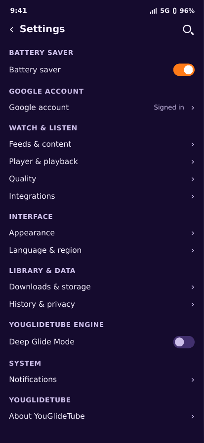
Settings.
Appearance
Theme. Pick a colour theme — Flow Default (deep violet, saffron and coral, dark-first), Morphe, Lavender, Nord, Deep Ocean, Cream Paper and more — in light and dark variants. Or build a custom theme of your own, choosing every colour role yourself.
App icon. Customise your launcher icon.
Animated backgrounds / Layout. Choose one of 30 festival looks (Diwali diyas and 29 more), or none. They are off by default; the app opens with a clean background.
Player appearance. Artwork colours, sleep-timer button, and how the player looks.
Fonts, date & time, navigation bar. Change the app font, date/time format, and the order of the bottom navigation tabs.
Content display. Grid size, thumbnails and layout density.
App language. Use your device language or pick one manually.
Content & Playback
Player settings. Autoplay, Background Play, SponsorBlock and more.
Video & music quality. Video resolution and music audio quality, separately for Wi-Fi and mobile data. Video quality defaults to Auto.
Buffer settings. How much video is buffered ahead — turn it up on slow networks.
Download settings. Performance, storage location and thread count.
Content preferences. Block topics you do not want to see.
Trending region. Which region's trending lists you see.
Search & history. Clear history, manage suggestions, pause watch history.
Library settings. What the Library shows and how it is organised.
Music home settings. What appears on the Music tab.
Privacy — YouGlideTube Engine
Deep Glide Mode and its options live here. They are explained in full in Chapter 17.
Data Management
Export data. Back up your data (settings, subscriptions groups and more).
Import data. Restore from a backup, or import from other apps — including your subscription groups.
Proxy settings. Route remote traffic through an HTTP or SOCKS5 proxy. Casting and local devices stay direct.
Time Management
Usage stats. See how much you have watched, counted from a real watch-time ledger.
Bedtime reminders. Get reminded when it is bedtime; reminders repeat every night and survive a reboot.
Break reminders. Reminders to take a break after long watching sessions.
Notifications
Notification Preferences — which notifications the app can send, and how often it checks for new ones. See Chapter 15.
Scrobbling
Connect Last.fm, Libre.fm and ListenBrainz accounts, and choose what is sent. See Chapter 18.
Diagnostics
The Diagnostics screen builds a report of what the app has been doing — playback, history, downloads and errors. If something goes wrong, generating a report here and sharing it is the fastest way to get it fixed: the report shows the exact lines (for example serverHistoryPing or commentsLoaded) that prove what happened.
About YouGlideTube
Version, licence and contributors.
Changelog. What is new in the version you have installed.
Check for update. Fetches the newest release and installs it when one exists — or tells you that you are up to date. If the check itself fails, it says so instead of claiming you are up to date.
Support & donations. How to help support development.
Battery saver. Found at the top of Settings, it switches off animations, glass blur, feed previews and Shorts pre-loading for a lighter, faster app.
17 Privacy & Deep Glide Mode
Deep Glide Mode is the app's private mode — browse privately, the way an incognito window works in a browser.
Turning it on
Go to Settings → YouGlideTube Engine → Deep Glide Mode and switch it on. The video that is playing pauses immediately, and the Home logo changes so you can see at a glance that private mode is on. Switch it off the same way. If you enabled Show on search, the switch also appears above recent searches on the Search screen.
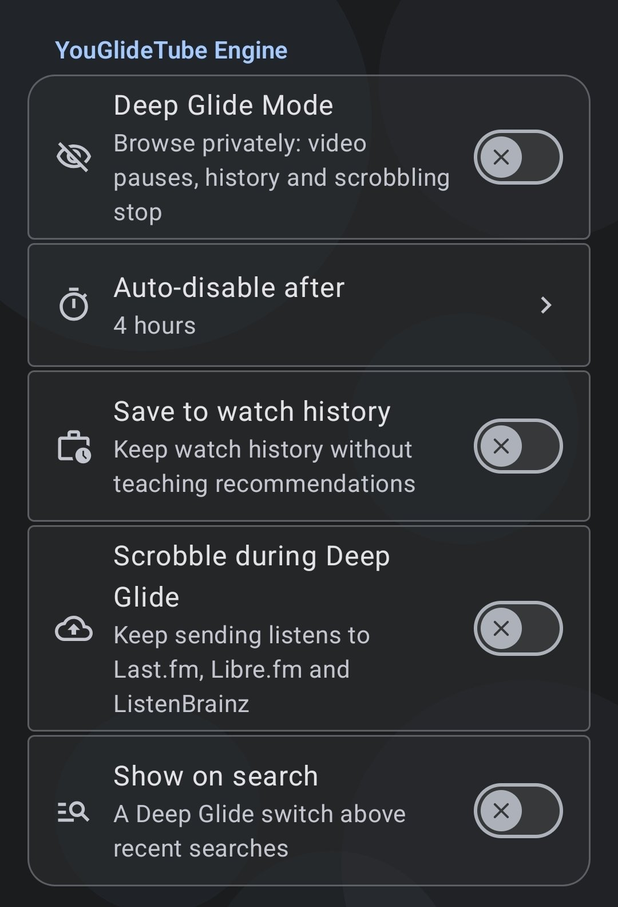
Deep Glide Mode settings — Settings → YouGlideTube Engine.
What Deep Glide Mode does
While it is on…
What happens
Video pauses
The video playing when you switch it on pauses at once.
Local history stops
Nothing you watch is written to the app's History. No local history rows are saved at all.
Server history stops
The watch signals YouTube's servers receive are blocked too — the playback beacon and the progress beacons. The video does not appear in your YouTube account history on any device.
Scrobbling stops
No listens go to Last.fm, Libre.fm or ListenBrainz — unless you turned on "Scrobble during Deep Glide".
Recommendations are not taught
Because nothing is recorded, the recommendation engine learns nothing from what you watch in Deep Glide.
Its options
Auto-disable after. Private mode switches itself off after a time you pick — 1, 2, 4, 6, 8, 12 or 24 hours, or Never (it stays on until you turn it off). The default is 4 hours. When the timer ends, you get a "Deep Glide timer ended" message.
Save to watch history. Keep watch history during Deep Glide — the videos are saved to your History, but without teaching recommendations. Off by default.
Scrobble during Deep Glide. Keep sending listens to Last.fm, Libre.fm and ListenBrainz while private mode is on. Off by default.
Show on search. Show a Deep Glide switch above recent searches on the Search screen. Off by default.
What Deep Glide Mode does not do
It does not hide you from your network or internet provider, and it does not change what YouTube already recorded before you switched it on.
It does not delete history. Use Clear All in History to wipe what is already there.
Turning it on mid-video, then off again later, means only the part watched while it was off is recorded — the private stretch is never sent to the server afterwards.
Pause watch history works the same way. The Pause watch history switch in Search & History settings freezes history on the server as well — while paused, nothing you watch is added to your YouTube history, locally or on the server.
18 Scrobbling
Scrobbling sends the songs you listen to to your Last.fm, Libre.fm and ListenBrainz accounts, building a listening history there.
Connect each service in Settings → Scrobbling and choose what is sent (now-playing updates and completed listens).
Scrobbling stops automatically in Deep Glide Mode, unless you turned on Scrobble during Deep Glide.
Scrobbling needs a network connection; listens are sent as you play.
19 Android TV
YouGlideTube includes a full Android TV layout — the same app, with a big-screen interface. It is built for the remote: a clear focus ring, matching banner, circles and animated backgrounds, and previews that follow the remote.
TV parity. Nothing mobile has is missing on TV: explore, categories, channel pages and subscriptions, TV Shorts, and the same player with the same fixes.
TV player. The same quality, speed, queue and subtitle controls, with a loading spinner that only shows while the video is actually buffering.
Sign-in on TV. Sign in on your phone first — your account then works on TV too.
TV uses the app's own default theme, not the TV's default; you can change it in Settings like on the phone.
20 Cast to TV
Cast to TV sends the video you are watching to a cast device (Chromecast / Google TV) on the same network, so it plays on the big screen while your phone acts as the remote.
Start casting from the cast button in the player.
Playback controls stay on your phone while the video plays on the TV.
Casting and local devices stay direct even if you use a proxy in Settings.
21 Updates
YouGlideTube checks for updates in the app — it does not need the Play Store.
Check for update (Settings → About → Check for update) fetches the newest release from the releases page and installs it when one exists. If you are up to date, it says so. If the check itself fails, it tells you the check failed instead of claiming you are up to date.
Every release carries a changelog — in the app (Settings → About → Changelog) and on the GitHub release page.
Each release is one universal APK that installs over any earlier version.
22 Troubleshooting
Problem
Try this
Home feed shows the same videos after refresh
Normal — YouTube serves the same feed for hours. Wait, or try Search / Subscriptions for fresh videos.
A video buffers or stalls
Check your connection, then Settings → Buffer Settings and raise the buffer. Battery saver off also helps.
Live video will not play
Make sure you are signed in — live streams load through your signed-in session. Then retry.
History came back after Clear All
Pull to refresh on the History screen; if an entry returns, delete it once more and check the Diagnostics report.
Liked music shows 0 songs
Sign in with the account you hearted the songs on, then open Liked music again — it shows only songs hearted in the music player.
A download will not play in the app
Try it in another player first: if it plays elsewhere, generate a Diagnostics report right after the failure and share it.
Notifications do not arrive
Check Settings → Notification Preferences (switches and check interval) and your system notification permission.
Something else is wrong
Settings → Diagnostics → generate a report. It records exactly what the app did, which makes the cause findable.
YouGlideTube is a fork of Flow 3.0.0 (GPL-3.0), rebranded and extended end to end. The player foundation builds on open-source work licensed under the GNU General Public License v3.0, and this project is distributed under the same licence. See the LICENSE file in the repository for the full text. SponsorBlock, DeArrow and Return YouTube Dislike data come from their community services.
YouGlideTube User Guide — November 2026. YouGlideTube is an independent open-source project and is not affiliated with YouTube or Google. YouTube is a trademark of Google LLC.